Une piste plus claire.
De nouvelles figures.
La V2 reprend les jardins de Luna : terrain parasite retiré, commandes tactiles revues, promenade enrichie et cinq figures articulées. Voici le véritable rendu de cette version de travail.
Jouer à la V2 ↗ · Rapport détaillé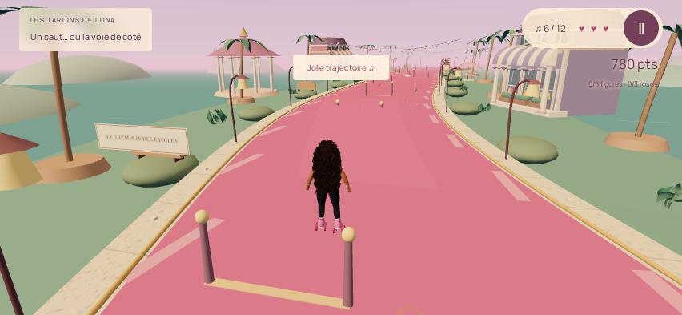
Le même endroit, avant et après
Les îlots beiges remontaient au-dessus de la piste ; un masque aléatoire créait le trou en pointillés. La V2 retire ces intersections et ce shader. La transparence ne concerne que les vrais décors qui cachent l'action.
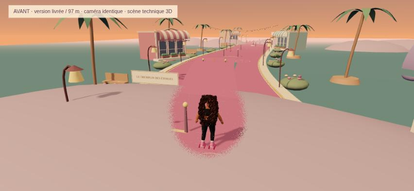
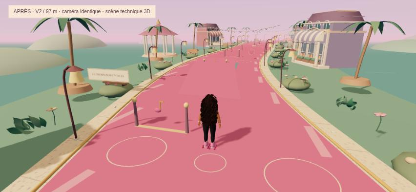
Comparaisons techniques 3D aux mêmes positions et avec la même caméra. Elles sont distinctes du parcours joué et de sa vidéo. Balayage CPU : 125 intersections parasites V1, zéro V2 sur 663 rayons.
Comparer à 40 m
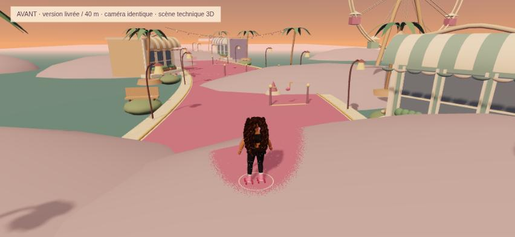
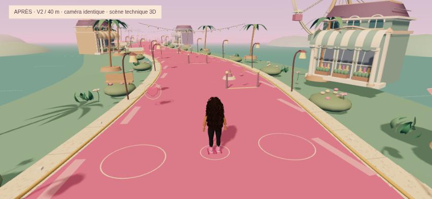
Comparer à 83 m
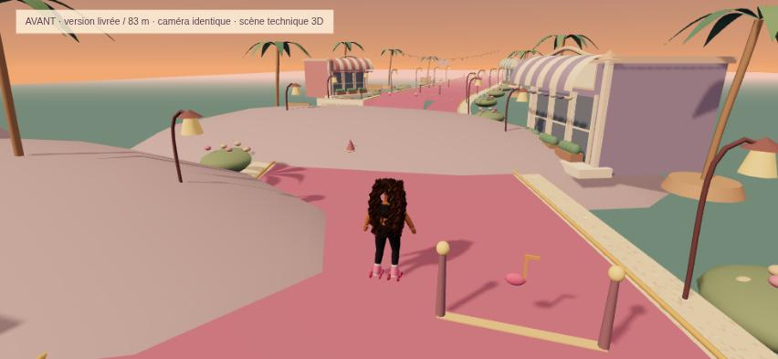
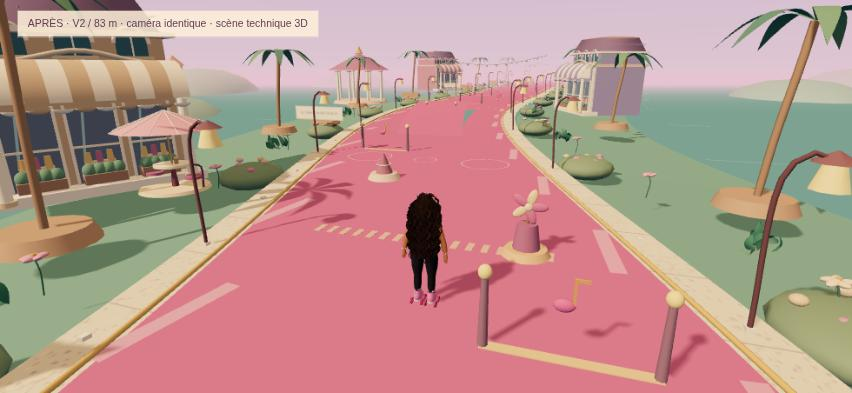
Comparer à 181 m
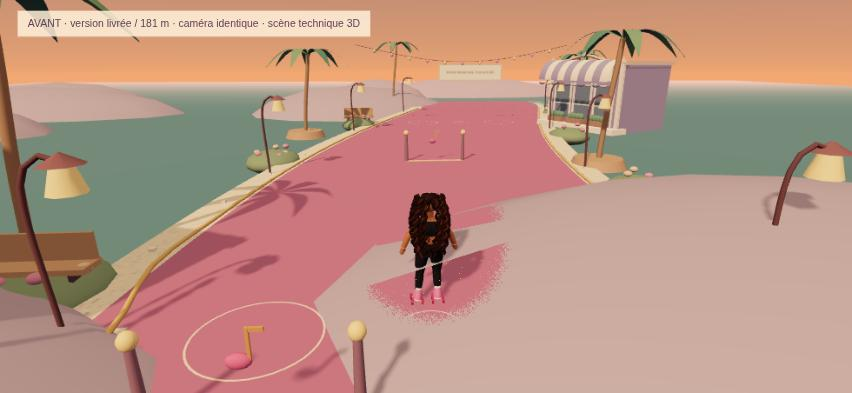
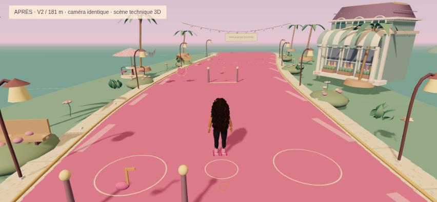
La transparence mise à l'épreuve
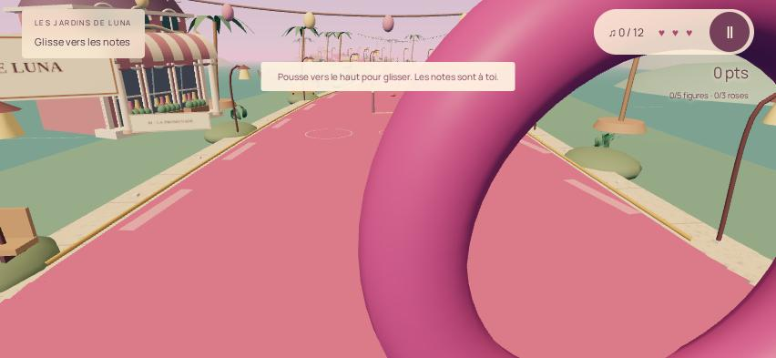
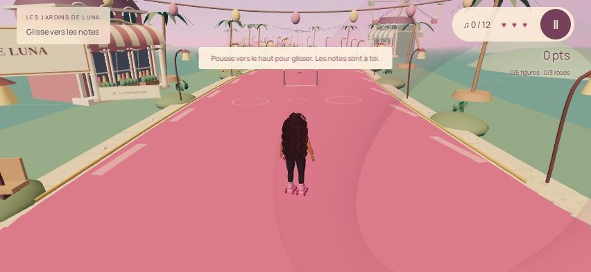
Mariam, un vrai modèle encore à affiner
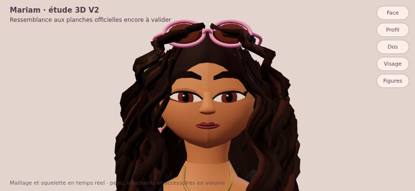
Paupières, visage, implantation des 84 mèches, mains, rollers et accessoires retravaillés. 43 254 triangles, 20 os, 12 maillages skinnés et deux morph targets.
La ressemblance reste insuffisante : visage, sourire, boucles et déformations demandent une finition artistique. Les cheveux masquent encore trop le profil. Ce modèle par profils et courbes n'est pas une sculpture Blender finalisée.
Explorer le modèle 3D ↗ · Limites détaillées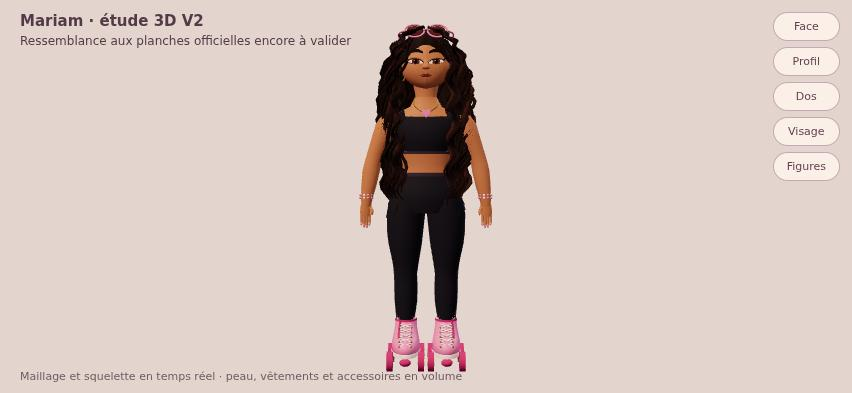
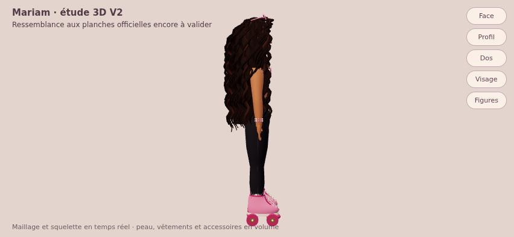
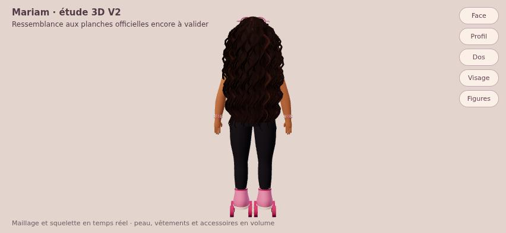
Maintiens le saut, change la figure
Direction, vitesse et rythme musical choisissent tour de lune, étoile, arabesque, croisé ou éclat du rythme. Deux obstacles floraux mobiles et trois roses facultatives complètent les douze notes, le tremplin et les checkpoints.
77 secondes continues du test navigateur, à vitesse originale, sans interpolation. Les ralentissements du rendu logiciel sont conservés ; aucune fluidité iPhone n'est déduite de cette vidéo. Son non enregistré ; musique disponible dans le jeu.
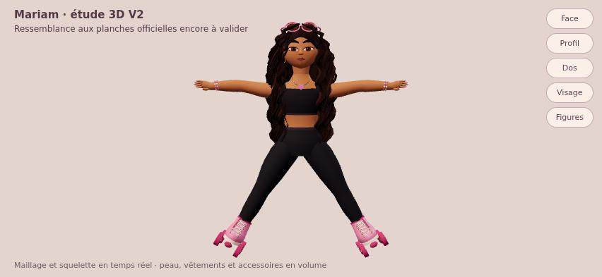
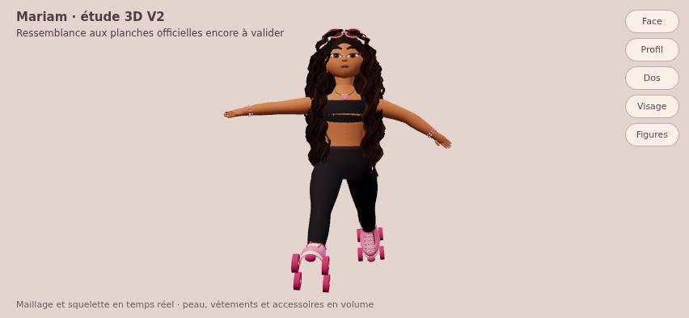
Les tests réellement exécutés
36/36 contrôles navigateur, 23/23 tests de simulation et 20/20 tests historiques réussis. Parcours gagné avec 12/12 notes, 2 471 points et un cœur restant. Deux chutes, dont une volontaire. Une seule figure et aucune rose obtenues pendant ce parcours navigateur.
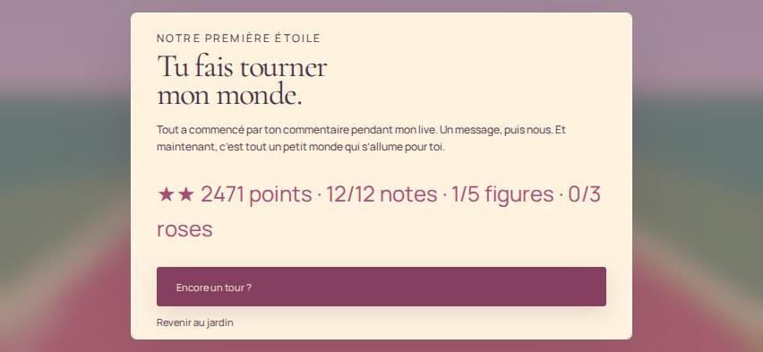
Safari sur iPhone physique n'a pas été testé. WebKit Linux et trois contacts simulés ne le remplacent pas. Les 60 FPS mobiles ne sont pas validés. Mesure serveur Linux/SwiftShader, mode léger : 5,09 FPS sur 195 images, médiane 183,4 ms, 95e percentile 383,4 ms.
Rechargement, checkpoints, chute et reprise, relâchements séparés et hors zone, annulation, pause et rotation : vérifiés. Trois sauvegardes historiques conservées à l'identique. Aucune erreur JavaScript ou shader Chromium collectée.
Voir les 36 contrôles
| Contrôle | Résultat |
|---|---|
| boot WebGL | Réussi |
| forward movement | Réussi |
| rig is skinned | Réussi |
| original soundtrack scheduled after gesture | Réussi |
| jump above ground | Réussi |
| pause freezes simulation | Réussi |
| two-finger steering and jump | Réussi |
| three simultaneous contacts | Réussi |
| release jump retains independent joystick and boost | Réussi |
| joystick tracks outside its original zone | Réussi |
| release outside clears joystick while boost held | Réussi |
| touch cancel clears input | Réussi |
| pause releases all pointer owners | Réussi |
| continue offered after reload | Réussi |
| reload resumes checkpoint and collected notes | Réussi |
| steering off edge charges exactly one heart | Réussi |
| fall returns to checkpoint with camera | Réussi |
| checkpoint reload and fall exercised | Réussi |
| full course won by keyboard events | Réussi |
| course collects notes | Réussi |
| three legacy save strings unchanged | Réussi |
| no overflow 667x375 | Réussi |
| rotate message 667x375 | Réussi |
| no overflow 932x430 | Réussi |
| rotate message 932x430 | Réussi |
| no overflow 393x852 | Réussi |
| rotate message 393x852 | Réussi |
| rotation clears held direction and pauses | Réussi |
| held jump earns a figure in actual gameplay | Réussi |
| clear track and opaque gameplay at 40 | Réussi |
| clear track and opaque gameplay at 83 | Réussi |
| clear track and opaque gameplay at 97 | Réussi |
| clear track and opaque gameplay at 181 | Réussi |
| body and landing framed | Réussi |
| WebKit Linux movement | Réussi |
| no Chromium JavaScript / shader errors | Réussi |
La suite, toujours prévue
La finition artistique reste en dessous des références officielles. Elle précède le hub 3D, Fashion Studio, la garde-robe, Barbie World, Cookie Kingdom, Noël et le sauvetage ailé de Rishanth. Ces systèmes ne sont pas livrés ici. Le retour actuel au checkpoint est technique, sans cinématique romantique.